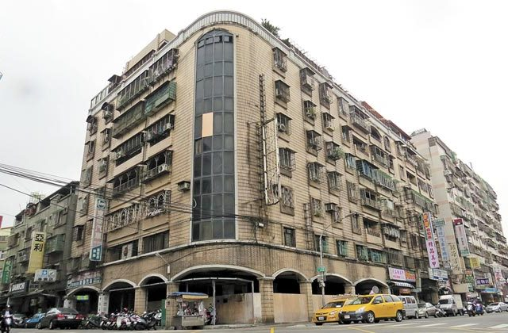

都更訊息
海砂屋更新 市府助您多臂之力
【新北市訊】為協助高氯離子鋼筋混凝土建築物（俗稱海砂屋）住戶透過都市更新改善居住環境，新北市政府多管齊下，除了提供免收審查費、協助成立更新會等行政協助之外，特別在都市更新處網站設立海砂屋專區，即日起正式上線，供民眾瞭解海砂屋，進而自主更新。
本市境內目前約有兩千多戶海砂屋，都市更新處處長王玉芬表示，為鼓勵海砂屋住戶儘早改建，提升居住安全，針對海砂屋辦理都市更新，提供包含免收審查費、送件同意門檻低、可簡化環境評估檢討項目外，還會主動辦理法令宣導說明會，並協助成立更新會及建置網頁專區等多項協助，為海砂屋辦理更新塑造優良的環境與條件。
都市更新處更新事業科科長程靜如進一步表示，現行一般更新重建案概要審查費6萬元，事業計畫審查費11萬元，權利變換計畫審查費11萬元，三項費用均免，比一般更新案件至少可省28萬元；海砂屋若經政府公告為「迅行劃定都市更新地區」，僅須超過土地及合法建築物人數及面積1/2同意，就能提出申請。
程科長指出，海砂屋得以原建築基地範圍劃定更新單元，其須檢討之項目較少，且有些項目得免檢討。在容積獎勵方面，除可申請都市更新容積獎勵外，還可申請海砂屋容積獎勵，最高可達30%。另外亦會主動聯繫海砂屋社區是否需辦理都市更新法令宣導說明會及輔導，後續視情況將社區列為輔導專案，進行更新前期規劃，並協助其成立更新會。都市更新處網站新設立的海砂屋專區即日起上線（ http://www.uro.ntpc.gov.tw/web66/_file/2991/upload/sandweb.html ），提供民眾查詢海砂屋更新相關資訊、輔導經驗和案例，讓民眾瞭解市府對海砂屋的協助及作法，再助民眾辦理都市更新一臂之力。
發言人：謝登武副處長 電話：02-29506206 轉 102
資料諮詢：更新處事業科程靜如科長 電話：02-29506206 轉 301
新聞聯絡：都市更新處秘書室游士蓓 電話：02-29506206 轉 202
< 返回列表地址：10580台北市南京東路四段150號2樓 電話：02-25780880#233 傳真：02-25786600
Copyright @ National Chinese Association for Urban Renewal
IE8.0 & Firefox 3.0 以上版本瀏覽器